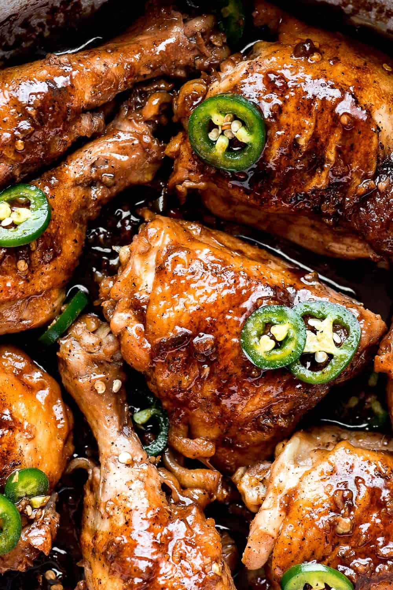

Adobo

Description
This adobo is a really good adobo. I really like this adobo. It is really tasty. It's saucy, savory, just a bit spicy, and best of all, it will Absolutely NOT make you shit your pants. No way, no how.
Ingredients
- Chicken
- Green Chili
- Garlic
- Onions
- Soy Sauce
- Vinegar
- Sugar
- Water
Steps
- Chop the Garlic, Green Chili, and Onions.
- Boil the water in a pot.
- Throw in the Chicken along with the sliced vegetables.
- Pour in the Soy Sauce.
- Pour half the amount of Soy Sauce in Vinegar.
- Put in sugar.
- Let it boil.
- Your adobo is finished!